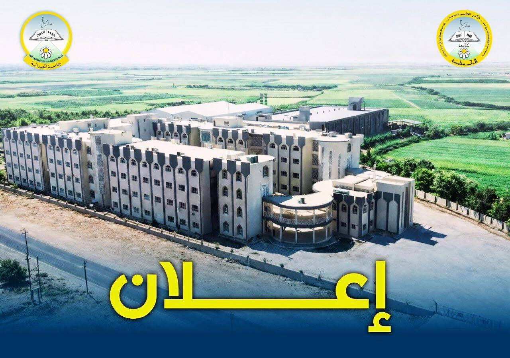
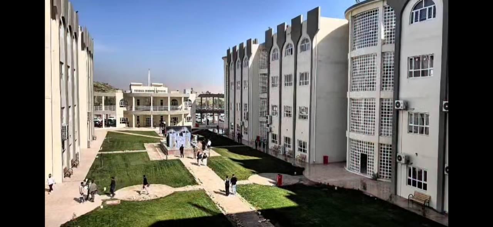
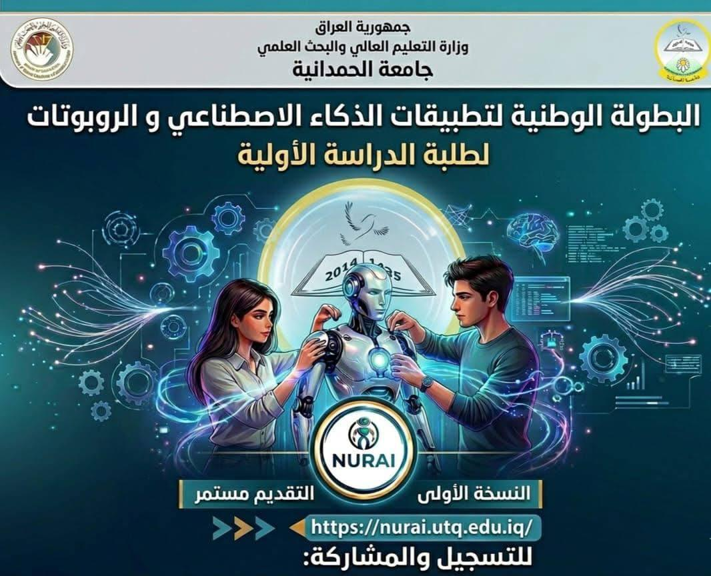
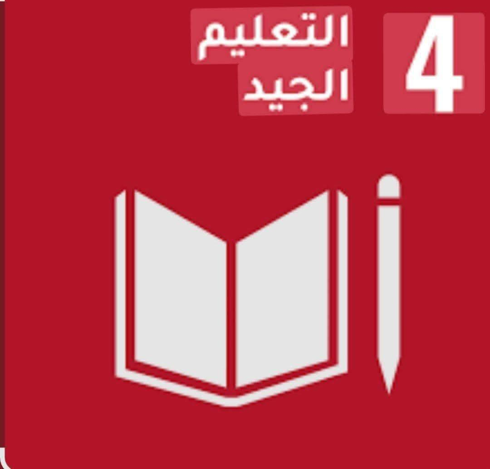
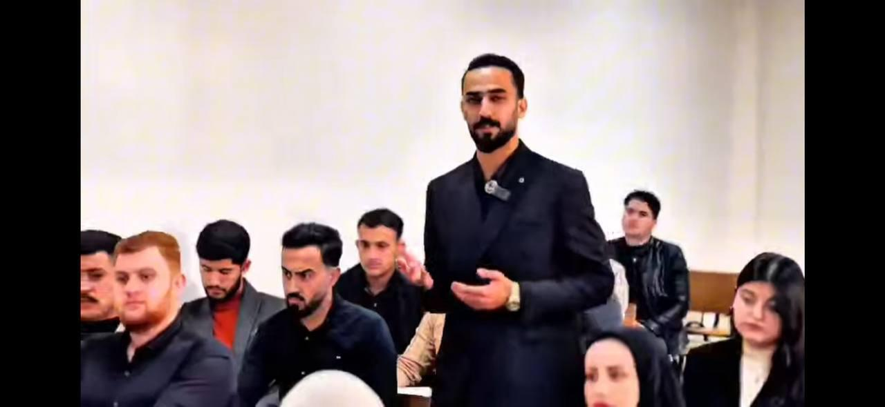
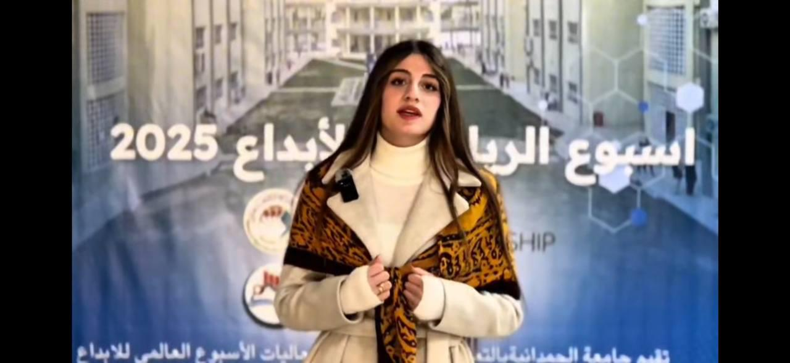
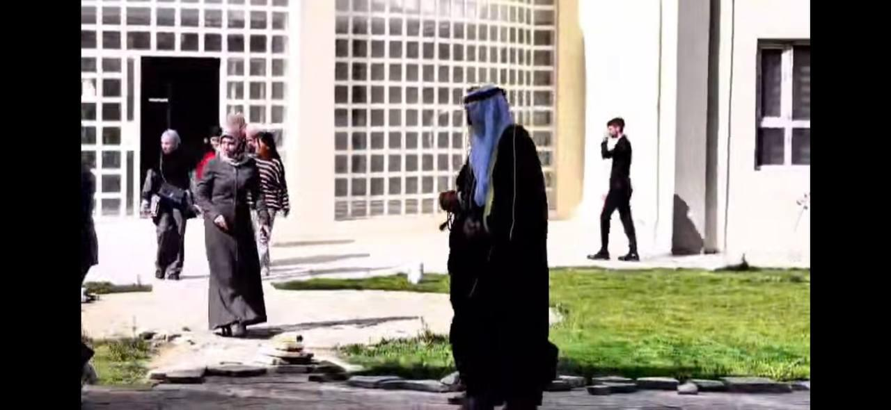
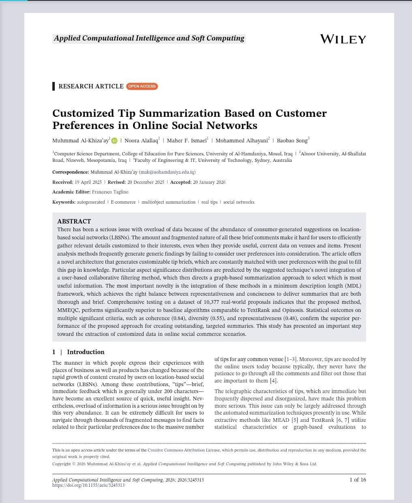
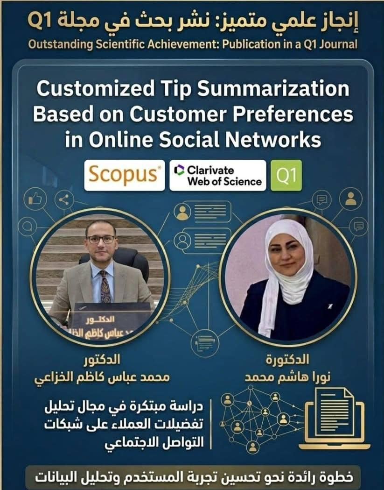

أحدث المبادرات المجتمعية
إعلان/ دورات تدريبية للاختبار الوطني
يُعلن مركز التعليم المستمر عن فتح باب التسجيل في عدد من الدورات التدريبية المهيئة للاختبار الوطني : (اللغة العربية / الحاسوب / اللغة الانكليزية)، المخصص للمتقدمين إلى برامج الدراسات العليا (الماجستير والدكتوراه).
📚 مميزات الدورة:
_شرح شامل للمهارات الأساسية المطلوبة في الاختبار.
_تدريبات عملية على نماذج أسئلة سابقة.
_محاضرات تفاعلية يقدمها أساتذة من ذوي الاختصاص في المجالات المذكورة.
🎯 الفئة المستهدفة:
جميع الراغبين بالتقديم للدراسات العليا (ماجستير ودكتوراه).
🗓️ موعد الانطلاق:
قريباً في مركز التعليم المستمر، مع إمكانية التسجيل الإلكتروني، علما أن المبلغ المطلوب سيتم تحديده لاحقا..


العودة للرئيسية
أحدث المبادرات المجتمعية
بذكائكم تنبض ملامح الغد
تدعو جامعة الحمدانية طلبتها من الدراسات الأولية من جميع الاختصاصات للمشاركة في بطولة (NURAI)
إلى الطاقات الواعدة في جامعة الحمدانية، إلى المهتمين بتقنيات الذكاء الاصطناعي، ومحبي البرمجة، ومطوري الحلول الذكية.. هذه فرصتكم لتحويل أفكاركم الرقمية إلى مشاريع مؤثرة!
تُعلن جامعة الحمدانية، عن استمرار التقديم لغاية 2026/4/15 في النسخة الأولى من البطولة الوطنية الجامعية للروبوتات وتطبيقات الذكاء الاصطناعي (NURAI).
وتهدف هذه البطولة إلى تعزيز الابتكار في مجالات الذكاء الاصطناعي والتقنيات الحديثة، وتنمية القدرات التحليلية والبرمجية، وخلق بيئة تنافسية تُبرز كفاءة الطلبة في تطوير الحلول الذكية.


العودة للرئيسية
أحدث المبادرات المجتمعية
نافذة عن جامعة الحمدانية : فيلم من إعداد قسم النشاطات الطلابية بالتعاون مع كلية التربية للعلوم الإنسانية.



العودة للرئيسية
أحدث المبادرات المجتمعية
أنجاز علمي جديد ومبتكر يضاف الى سجل جامعة الحمدانية وتأكيداً على ريادتها في أيجاد حلول تكنلوجيا وتقنية تواكب التطور العالمي من خلال دراسة مبتكرة في مجال تحليل تفضيلات المستخدمين على منصات التواصل الاجتماعي والتجاري حيث نشرت دراسة بحثية تطبيقية حديثة للدكتور محمد عباس كاظم معاون العميد للشؤون العلمية في كلية التربية للعلوم الصرفة وبالتعاون مع الدكتورة نورا هاشم محمد معاون العميد للشؤون العلمية في كلية الحاسبات والمعلوماتية في مجلة عالمية مصنفة ضمن الربع الأول (Q1) في مستوعبي Scopus وClarivate، حيث يساهم هذا البحث في خدمة المجتمع العراقي من خلال دعم المشاريع في محافظات العراق كمحافظة نينوى ، ويحقق مجموعة من أهداف التنمية المستدامة أبرزها الابتكار والبنية التحتية (SDG 9)، والمجتمعات المستدامة (SDG 11)، والاستهلاك المسؤول (SDG 12)، والحد من أوجه عدم المساواة (SDG 10)، وعقد الشراكات لتحقيق الأهداف (SDG 17)، لتؤكد بذلك جامعة الحمدانية مكانتها الريادية في إنتاج البحوث العلمية التطبيقية ذات ألاثر الحقيقي محلياً وعالمياً.


العودة للرئيسية